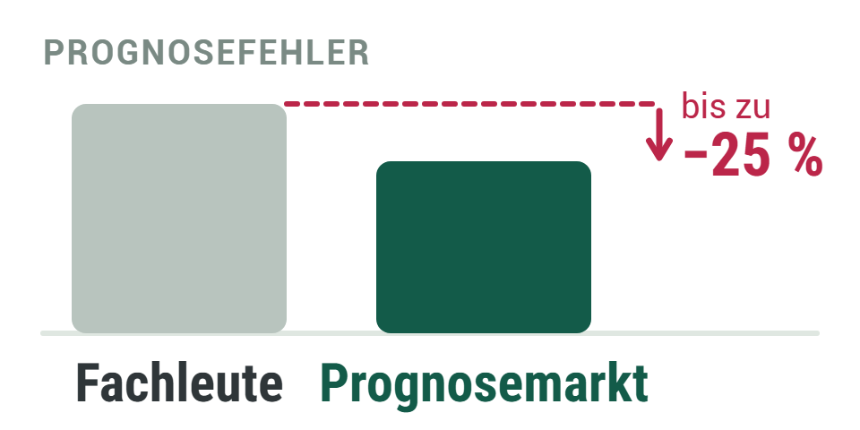

Prognosemärkte in Unternehmen schlagen das Urteil der Fachleute
Bei Google, Ford und einem großen Industrieunternehmen lagen interne Prognosemärkte näher an der Wirklichkeit als die Vorhersagen der Fachleute, mit einem um bis zu 25 % kleineren Fehler.
Cowgill & Zitzewitz (2015), Review of Economic Studies